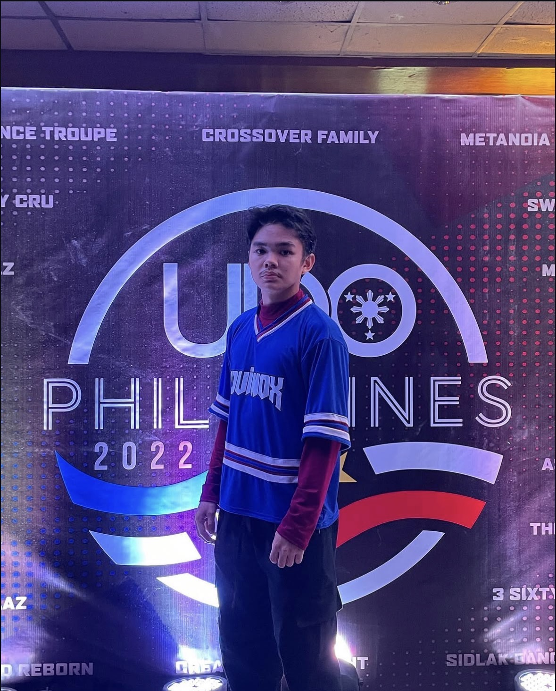
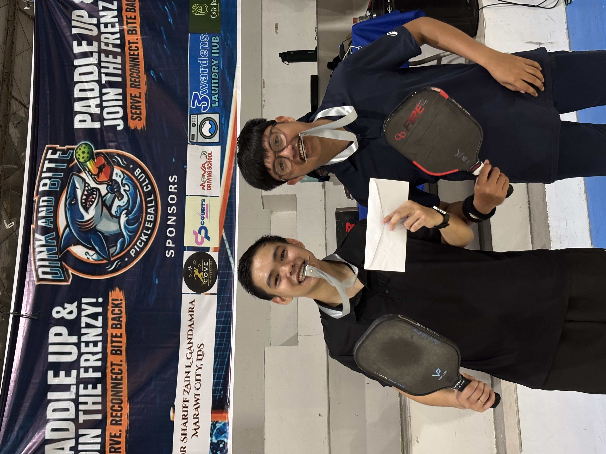
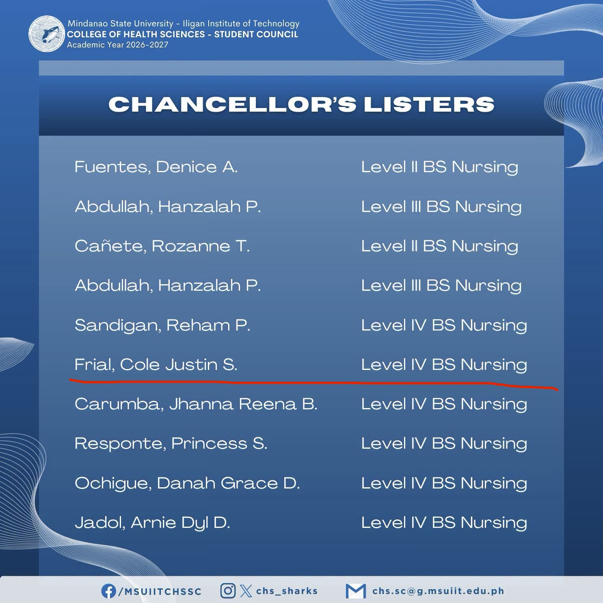

Talents & Pursuits
Balancing physical discipline, rhythm, and academic performance.

[01] RHYTHM & STAGE
Competitive Dancing
Served as a proud member of my high school dance troupe, Equinox. Together, we performed and competed both regionally within the city and on national stages.

[02] ATHLETICS
Jack of All Trades
I can pick up almost any sport and play at a decent level—from racquet sports like pickleball to team disciplines. While I may not master just one, versatility and quick adaptation keep things fun.

[03] ACADEMICS
Chancellor's Lister
While balancing multiple hobbies, creative pursuits, and clinical duties, I have maintained high academic standing as a consistent Chancellor's Lister throughout my BSN journey at MSU-IIT.